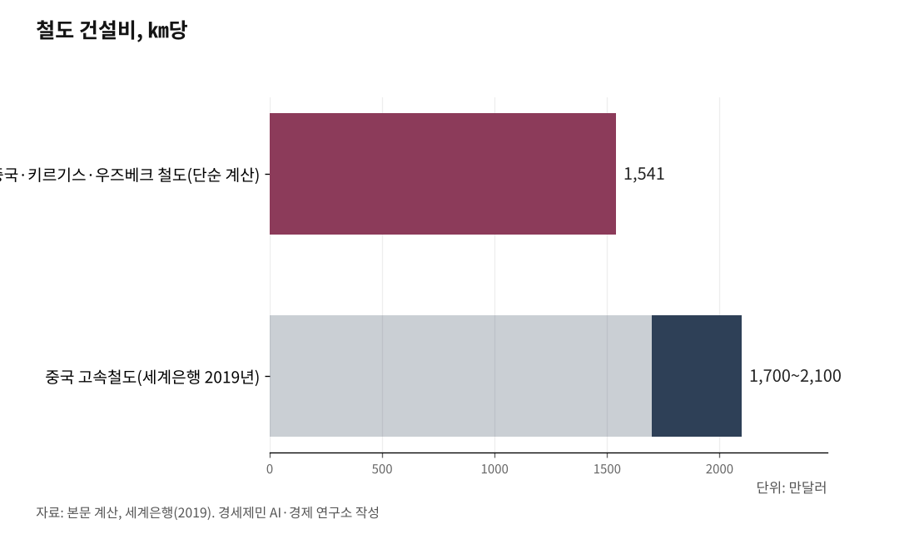

[중국철도⑪] 중국·키르기스·우즈베크 철도, 착공 2년에 공정률 목표 5%
키르기스 구간 305㎞에 47억달러, 터널 29개에 104.83㎞
제 출자금 절반마저 중국 차관 3억500만달러
마크말에서 갈리는 표준궤와 광궤, 노선 아래 주택 214채 철거
중국·키르기스스탄·우즈베키스탄 철도(CKU)는 산을 뚫는 사업이다. 중국 신장 카슈가르에서 키르기스스탄 톈산을 넘어 우즈베키스탄 안디잔까지 약 530㎞를 잇는다. 2024년 12월 착공했고, 세 나라 합작회사가 맡은 키르기스스탄 구간 304.94㎞에만 47억달러가 붙었다. 사업 주체가 올해 말까지 잡은 목표 공정률은 5%다.

1. 착공 2년, 올해 목표 5%
중국국가철도그룹 기록을 보면 착공식은 2024년 12월27일 잘랄아바드에서 열렸다. 2025년 4월29일 대형 터널 세 곳이 굴착에 들어가며 본선 공사가 시작됐다. 합작회사는 같은 해 12월16일 비슈케크에서 중국 은행단과 대출 협정을 맺었다. 노선을 따라 임시도로 192.323㎞를 먼저 내고 변전소 네 기를 세웠다. 논의를 시작한 지 20여년 만이다.
터널이 이 사업의 몸통이자 공사비의 몸통이다. 모두 29개에 총연장 104.83㎞로 키르기스스탄 구간의 3분의 1을 넘는다. 5㎞가 넘는 터널이 여덟이고 나린 1호와 코시도보, 페르가나 세 곳은 12㎞를 넘는다. 키르기스스탄 교통통신부는 29개 전부에서 굴착이 돌아간다고 밝혔다. 그런데도 올해 말 목표는 전체 공정의 5%다.

2. ㎞당 1541만달러
키르기스스탄 구간은 304.94㎞다. 총사업비를 연장으로 단순히 나누면 ㎞당 1541만달러다. 세계은행이 2019년 집계한 중국 고속철도 건설비는 ㎞당 1700만~2100만달러였다. 다른 나라보다 3분의 1가량 싸다는 평가가 붙은 값이다. 시속 350㎞로 달리는 고속철도와 견줘도 이 산악 재래선 단가가 크게 낮지 않다.
설계 제원은 국제 회랑이라는 이름에 견주면 수수하다. 중국국가철도그룹 자료를 보면 이 구간은 단선이고 디젤기관차가 끈다. 전철화는 뒤로 미루고 나중에 할 수 있게 시설 여지만 남겼다. 최고속도는 여객이 시속 120㎞, 화물이 시속 90㎞다. 교량 50개와 터널 29개가 합쳐 120㎞, 교량 총연장만 15.18㎞로 노선의 40%가 구조물이다.
3. 출자금마저 빌린 구조
사업은 건설·운영·양도(BOT) 방식이다. 중국철로국제유한공사와 키르기스스탄 국영철도, 우즈베키스탄 철도가 합작회사를 세웠다. 회사는 키르기스스탄 법에 따라 세웠고 지분은 중국 51%, 키르기스스탄 24.5%, 우즈베키스탄 24.5%다. 합작회사는 2024년 9월28일 비슈케크에서 문을 열었다. 세 나라는 국경별로 따로 짓지 않고 회사 하나에 묶었다.
키르기스스탄 내각 발표를 보면 47억달러의 절반은 중국 은행단이 35년 만기로 빌려준다. 중국국가개발은행과 수출입은행이 낀 은행단이다. 갚는 주체는 정부가 아니라 합작회사다. 나머지 절반은 세 나라가 자본금으로 넣는다. 투자협정은 2025년 12월20일까지 자금 조달을 끝내라고 못 박았고 서명은 나흘 앞선 12월16일에 이뤄졌다.
키르기스스탄 몫은 7억달러 안팎이다. 그런데 이 나라는 제 출자금의 절반만 국가예산으로 댄다. 나머지는 중국에서 3억500만달러를 25년 만기로 빌려 채우니, 빌린 돈으로 지분을 사는 셈이다. 토지 수용과 이주, 전력과 용수 공급은 그 나라 몫으로 따로 붙는다. 세계은행은 이 철도를 캄바라타-1 수력발전소와 함께 키르기스스탄 인프라 대형사업으로 적었다.
4. 마크말에서 갈리는 궤간
이 철길은 궤간이 처음부터 두 개다. 투루가르트에서 마크말까지는 중국과 같은 표준궤(1435㎜, 국제 표준 철도 궤간)로 깔린다. 마크말 서쪽은 옛 소련권이 쓰는 광궤(1520㎜, 러시아와 중앙아시아권 규격)다. 국경이 아니라 산 안쪽으로 한참 들어와서 궤간이 바뀐다. 궤간 규격을 두고 세 나라가 오래 다투다 이렇게 갈랐다.
국경인 투루가르트는 고지대여서 환적 설비는 산 안쪽 마크말에 자리 잡았다. 마크말역은 화물만 옮겨 싣는 곳이 아니다. 열차를 풀고 다시 엮으며 컨테이너를 부리고 실어 분류한다. 화차와 화물 무게를 달고 1520㎜와 1435㎜ 사이에서 윤축을 갈아 끼운다. 화물 터미널과 창고, 정비 야드가 함께 들어서고 이 설비 규모가 노선 처리량의 상한을 정한다.
5. 500만톤에서 1500만톤까지
타당성조사가 잡은 물동량은 보수적으로 초기 연 500만~800만톤이다. 장기로는 1300만~1500만톤까지 본다. 다만 이 값은 개통 뒤 실적이 아니라 아직 전제다. 단선과 디젤에 환적 한 번이 겹쳐 실제 수송력을 정한다. 물동량이 전제에 못 미치면 35년 만기 차관을 갚을 현금흐름이 얇아지고 부담은 합작회사와 세 주주에게 돌아간다.
거시 지표도 함께 볼 값이다. 세계은행 거시빈곤전망을 보면 키르기스스탄 국내총생산은 2025년 226억달러다. 그해 실질 성장률은 11.1%로 높은 편이었다. 공공부채는 그해 말 국내총생산의 39.5%로 한 해 전 36.1%에서 올랐다. 키르기스스탄 구간 사업비 47억달러는 그 나라 한 해 국내총생산의 21%에 해당한다.
이 사업은 땅 위에서도 값을 치른다. 노선을 내느라 주택 214채를 헐고 그 가운데 191채가 잘랄아바드주에 있다. 감정평가는 독립 법인이 맡았지만 보상액에 불복한 주민이 나와 공청회가 이어진다. 내각은 2026년 8월18일 결의로 나린주 아크탈라군에 대체 부지 3.36헥타르를 배정했다. 시공사는 환경 규정을 어겨 당국에 벌금을 물었다.
올해 말 목표인 공정률 5%는 착공 2년치 성적이다. 완공 목표는 2030년이고 우즈베키스탄 국영철도 쪽은 2년 앞당길 수 있다고 본다. 터널 29개는 아직 뚫는 중이고 교량 50개 가운데 38개가 첫 삽을 떴다. ㎞당 1541만달러라는 값과 연 500만톤이라는 초기 전제가 어디서 만나는지는 개통 뒤 운임과 환적 시간이 보여준다.
※ 이 기사는 AI 프로그램 클로드를 활용해 작성했습니다.
참고문헌
· "中吉乌铁路项目（吉尔吉斯斯坦境内段）", 중국국가철도그룹(中国国家铁路集团有限公司), 2025.1.3., http://wap.china-railway.com.cn/gjhz/jwxmjj/202501/t20250103_140427.html
· "Подписано соглашение о финансировании строительства железной дороги «Китай - Кыргызстан - Узбекистан»", 키르기스스탄 내각(Кабинет Министров Кыргызской Республики), 2025.12.16., https://www.gov.kg/ru/post/s/25876-kytai-kyrgyzstan-ozbekstan-temir-zolun-kuruu-dolboorun-karzyloo-ucun-makuldasuuga-kol-koyuldu
· Jildiz Nicharapova, "Progress on the China-Kyrgyzstan-Uzbekistan Railway, Some Challenges Remain", The Diplomat, 2026.7.17., https://thediplomat.com/2026/07/progress-on-the-china-kyrgyzstan-uzbekistan-railway-some-challenges-remain/
· "Железная дорога Китай - Кыргызстан - Узбекистан. Какие работы сейчас ведутся", Kaktus.media(키르기스스탄 교통통신부 인용), 2026.4.15., https://kaktus.media/doc/544411_jeleznaia_doroga_kitay_kyrgyzstan_yzbekistan._kakie_raboty_seychas_vedytsia.html
· "Кабмин выделил участки взамен изъятых у граждан для строительства железной дороги", Kaktus.media, 2026.8.21., https://kaktus.media/doc/551851_kabmin_vydelil_ychastki_vzamen_iziatyh_y_grajdan_dlia_stroitelstva_jeleznoy_dorogi.html
· "Construction of China–Kyrgyzstan–Uzbekistan Railway Continues", UzDaily, 2026.7.31., https://www.uzdaily.uz/en/construction-of-china-kyrgyzstan-uzbekistan-railway-continues/
· "Kyrgyz Republic — Macro Poverty Outlook", 세계은행(World Bank), 2026.4., https://thedocs.worldbank.org/en/doc/d5f32ef28464d01f195827b7e020a3e8-0500022021/related/mpo-kgz.pdf
· "China's High-Speed Rail Development", 세계은행(World Bank), 2019.7., https://documents.worldbank.org/en/publication/documents-reports/documentdetail/933411559841476316/chinas-high-speed-rail-development
#중키우철도 #CKU철도 #카슈가르안디잔 #마크말환적 #표준궤광궤 #키르기스스탄철도 #우즈베키스탄철도 #일대일로 #중앙아시아회랑 #철도건설비 #중국철도